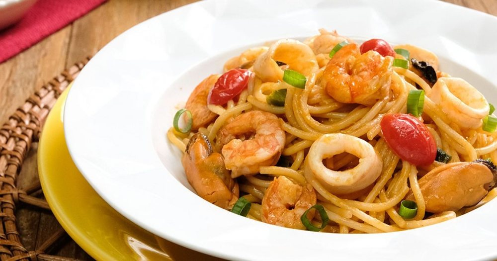

Frutos do mar · Massas com frutos do mar
Molho de frutos do mar

Ingredientes
- 100 g de vôngoles ou mexilhões pesados com as conchas
- ¼ xícara de azeite de oliva
- 2 dentes de alho
- 1 cebola ralada
- ½ xícara de tomates
- ½ xícara de purê de tomate
- ¼ xícara de vinho branco
- 50 g de lulas limpas
- 50 g de camarões sete-barbas
- Sal e pimenta-do-reino branca a gosto
- 2 colheres (sopa) de salsa picada
Modo de preparo
- Lave muito bem os vôngoles ou os mexilhões. Coloque numa panela pequena, cubra com 1 xícara de água e leve ao fogo até ficarem cozidos e se abrirem. Elimine os fechados. Escorra os vôngoles e reserve a água do cozimento.
- Numa panela grande, aqueça o azeite. Doure o alho amassado e a cebola por 5 minutos. Acrescente os tomates sem pele e sem sementes, picados. Junte o purê de tomate e cozinhe até os tomates se desmancharem, juntando a água do cozimento dos mariscos.
- Adicione o vinho branco e cozinhe por mais 10 minutos. Em seguida, acrescente os mariscos, as lulas cortadas em rodelas e os camarões limpos.
- Tempere com sal e pimenta-do-reino. Cozinhe por mais 10 minutos. Retire do fogo, deixe esfriar completamente e congele.
Observação
Nunca congele molhos com creme de leite: deixe para colocar o creme de leite depois de reaquecer o molho. Congelamento: congele o molho já frio em potes de polietileno, ou em um recipiente rígido que possa ir ao freezer, ou coloque diretamente num saco plástico que feche hermeticamente. Descongelamento: na geladeira de um dia para o outro, ou numa panela em fogo brando, em banho-maria, até descongelar. Polvilhe a salsa e sirva.